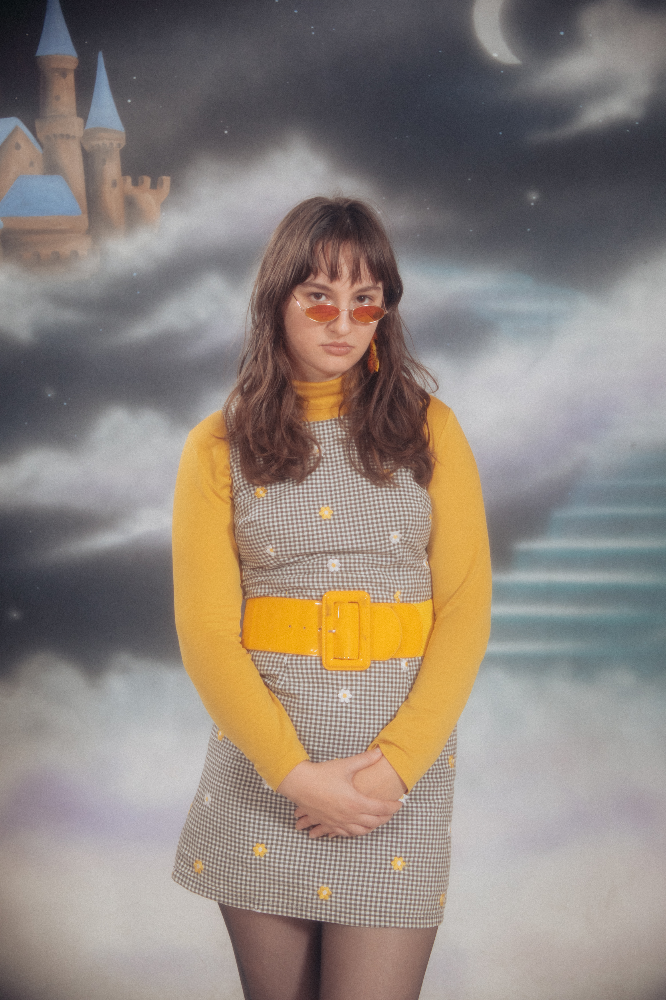

About

Kathryn Zix is an artist and arts programmer based in Portland, Oregon. She studied Art and English at Reed College, where her work brought together studio art, creative writing, and research.
Her artistic practice explores the relationships between technology, time, memory, and the construction of personal and collective histories. She is interested in how technological systems shape the ways people experience, document, and interpret the world, as well as the cultural narratives and imagined futures that emerge from them. Her work moves between documentary and speculative approaches, examining subjects ranging from technological obsolescence and personal archives to suburban landscapes, consumer culture, and the visual language of technological progress.
Working across digital and analog media, she creates artists' books, zines, video, digital collage, and installations. Her projects often draw on existing images, interfaces, archival material, and everyday technologies, using them as both subjects and tools for constructing new visual and narrative environments.
Alongside her artistic practice, Kathryn works in arts programming and public art, developing and coordinating projects that connect artists and the public.
This website presents a selection of her creative work and projects.